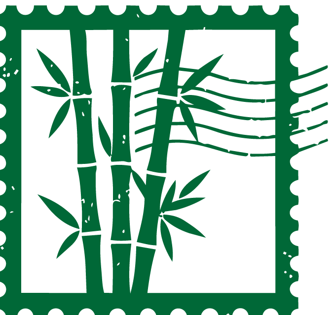
JP · 001
YM — média des instants vécus
Tu repartiras toujours avec une nouvelle façon de regarder le monde.
Made of moments.
Défiler
01 — Ce que nous sommes
YM n'est pas une agence. Ni un studio. Ni un fil social de plus. C'est un carnet de route tenu par des gens qui préfèrent rester une heure de trop dans un garage, un atelier ou un paddock plutôt que de repartir avec la photo qu'on attendait. On y documente les artisans, les pilotes, les villes et les gestes que personne ne pense à filmer — jusqu'à ce qu'ils disparaissent.
0
reportages publiés
0
pays traversés
0
années de route

Sport automobile
Dans les coulisses
des 24 Heures
Trois jours dans le support paddock du Mans, entre les mécaniciens qui ne dorment pas et les stands qui poussent comme des villes provisoires. Un reportage sur ce que la course ne montre jamais à la caméra.
Lire le reportage →Quatre façons de regarder ailleurs
Voyage
Des routes qu'on ne trouve pas dans les guides.
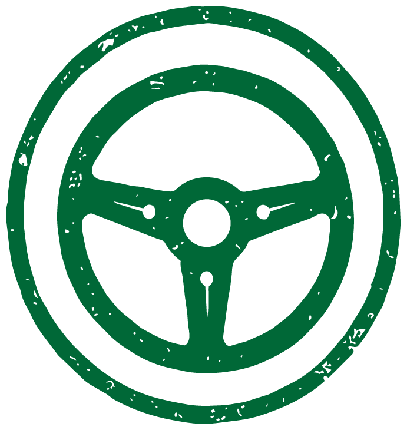
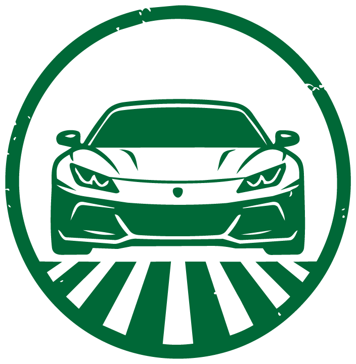
Sport auto
Paddocks, stands et circuits vus de l'intérieur.
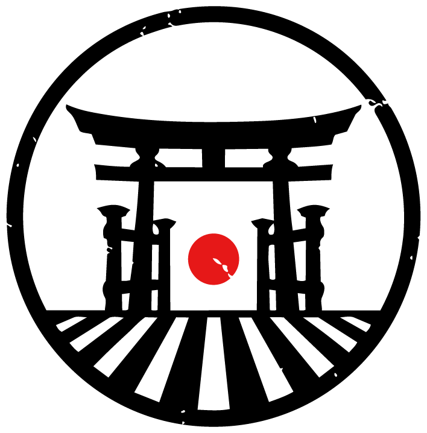
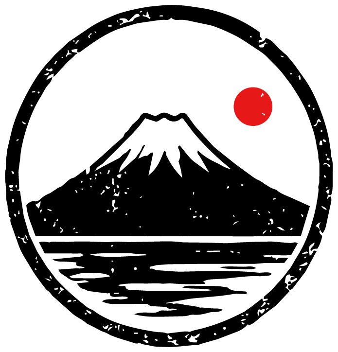
Culture japonaise
Artisans, temples et savoir-faire transmis.
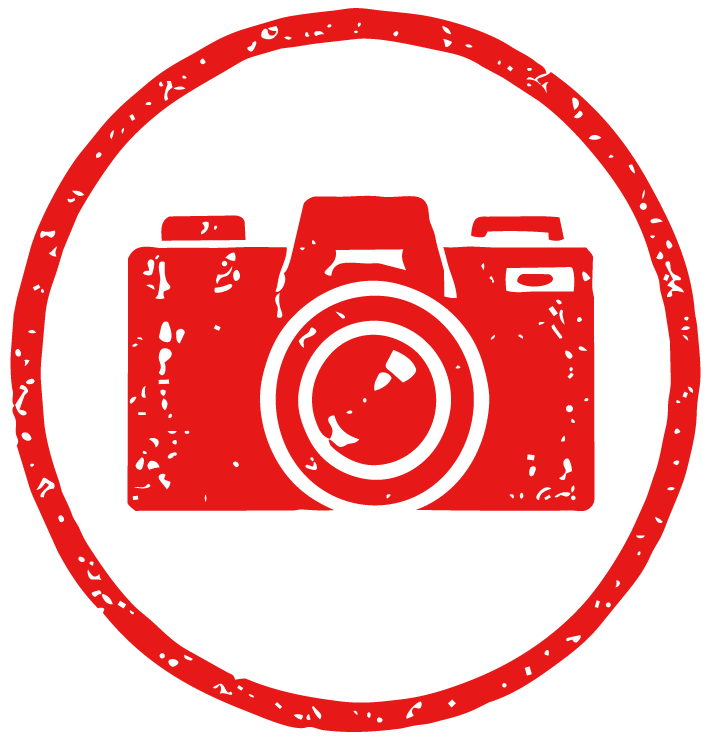
Portraits & métiers
Ceux qui font les choses avec leurs mains.

03 — À regarder
24 heures, une seule nuit.
Notre série documentaire suit trois équipages du WEC de la journée test au drapeau à damier. Pas de voix off. Juste le bruit des stands, la tension des stratégies et l'attente, longue, entre deux relais.

Portraits & métiers
Les mains qui
n'oublient jamais
À Mashiko, un céramiste façonne encore chaque bol comme le lui a appris son grand-père. Ni tour électrique, ni mesure : seulement la mémoire du geste, répété depuis quarante ans jusqu'à devenir invisible.
Lire le reportage →
Voyage
Sur la route
de Fuji
Neuf cents kilomètres à pied, en train local et en stop, pour rejoindre le sommet par les chemins que les cars de tourisme ne prennent pas. Un carnet sur la lenteur, volontaire, dans un pays qui a inventé le train le plus rapide du monde.
Lire le carnet →Chaque reportage,
un tampon dans le carnet.
Inspirées des tampons de gare japonais, nos archives se collectionnent comme des souvenirs de voyage.
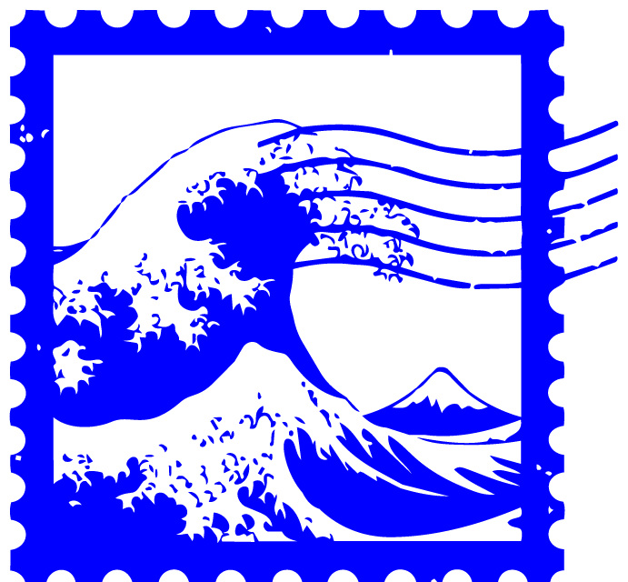
JP · 014Sur les quais de Kamakura
Carnet — Mai 2025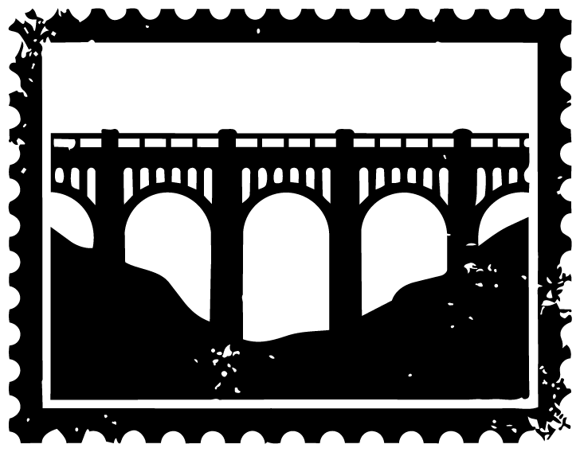
FR · 032Le pont que le TGV ne voit plus
Reportage — Juin 2025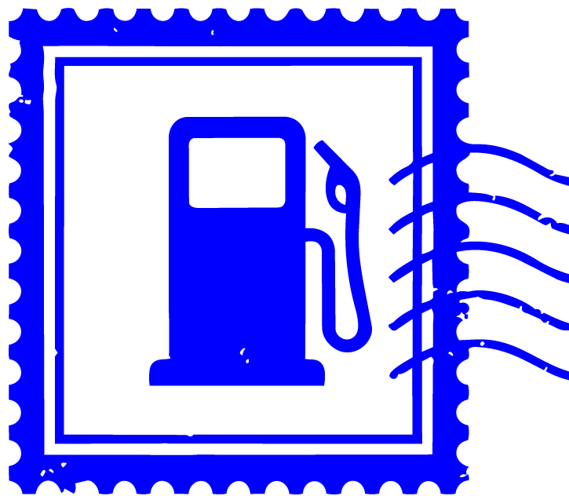
US · 007La dernière station avant le désert
Carnet — Septembre 2025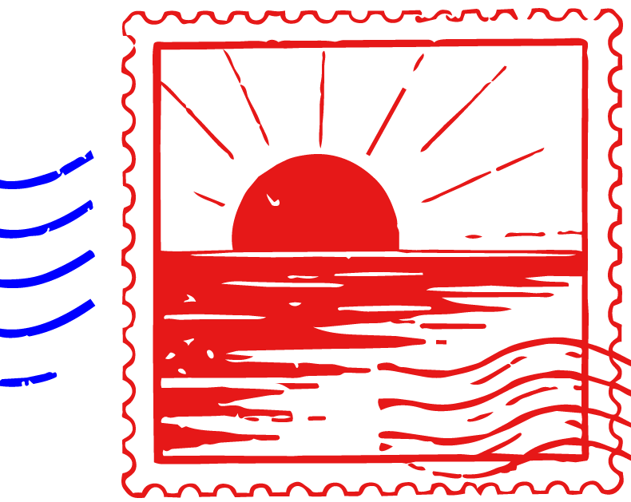
PT · 019Couchers de soleil, sans filtre
Carnet — Octobre 2025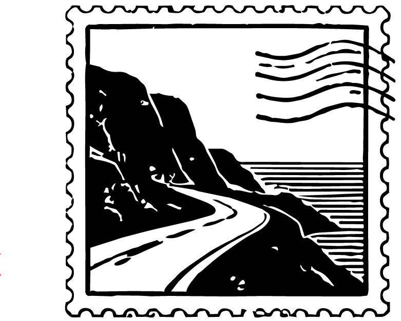
IT · 026La route qui longe la falaise
Reportage — Décembre 2025« On ne shoote pas les gens de YM. On les laisse continuer ce qu'ils faisaient, et on essaie de ne pas être dans le chemin de la lumière. »— Une rédactrice de YM, carnet de terrain